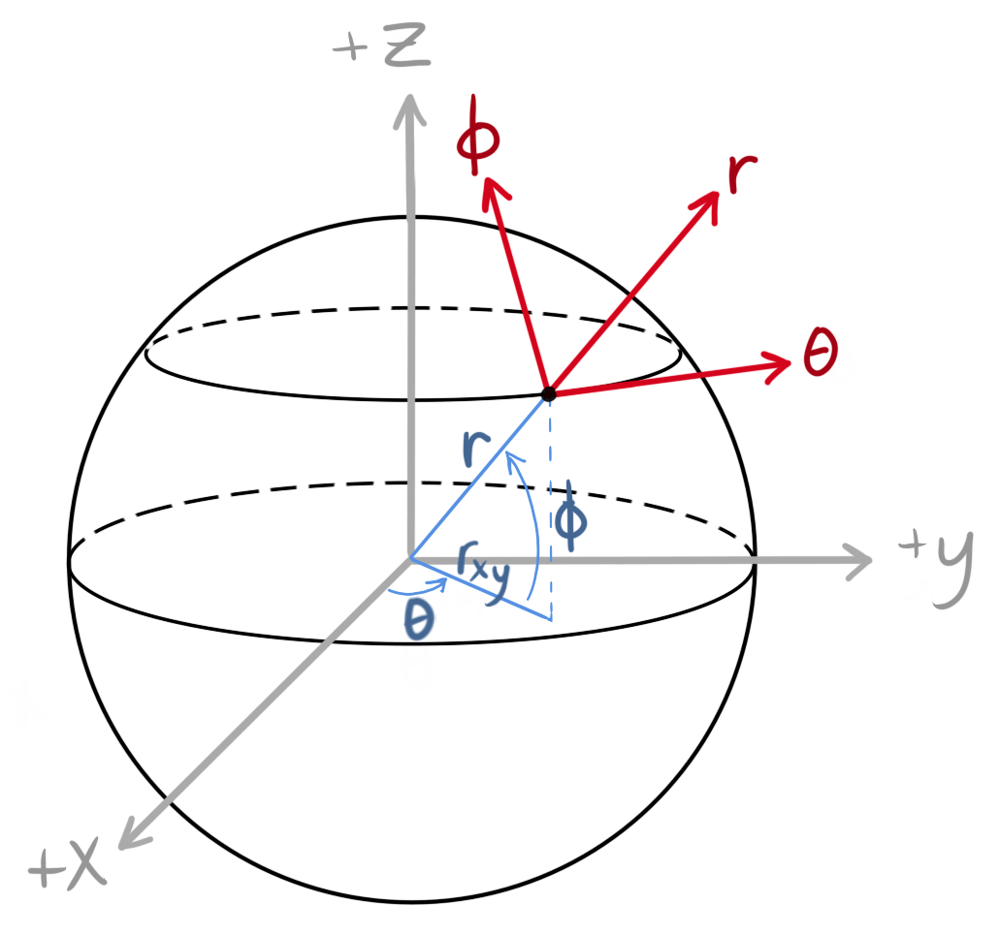

Spherical and Cylindrical Coordinates¶

Caption: The spherical coordinate system (red axes) uses radius r (the distance from the origin which is often the center of the body), theta \(\theta\) (the angle between the x and y axes), and phi \(\phi\) [the angle between the midplane (z = 0) and the z axis]. Alternatively, the cylindrical coordinate system uses cylindrical radius r\(_{xy}\) (the distance perpendicular from the rotational axis), \(\theta\), and z (distance from the midplane or xy plane). Both coordinate systems are often more useful than the Cartesian coordinate system (xyz, grey axes) to describe locations within or about ellipsoidal bodies, especially those that rotate like planets. Credit: G. O. Hollyday.
Typically, we are used to dealing with xyz positions in three-dimensional space. It is easy to understand objects in terms of their x, y, and z dimensions (width, height, and depth, for example). The xyz coordinate system is what is known as Cartesian coordinates.
However, it is not always easy to describe objects with Cartesian coordinates. For example, it is not intuitive to describe a sphere in terms of its xyz coordinates (would you know whether a certain location was on the surface or interior of a sphere based on an xyz coordinate?). It is much easier to describe a location on a sphere using a radius (the distance from the center of the object to the location) and angles (is the location on the back or the front of the sphere? Is the location on top or on bottom of the sphere?). The three-dimensional coordinate system that uses radii and angles to describe locations in space is called spherical coordinates.
Spherical coordinates use r, \(\theta\), and \(\phi\) (see the image above).
Radius r is the distance from the center of an object, or the origin (0, 0, 0) of the xyz axes, to a point in three-dimensional space. The radius is equal to
On Earth, this would describe whether someone were on an airplane (above the surface) or on the surface (would vary depending on elevation, i.e. mountain, sea level, or scuba diving in the ocean).
Theta \(\theta\) is the angle between the midplane (z = 0; perpendicular to rotational axis) and the radius. Theta is related to z via \(z=rsin\theta\). In other words, theta describes how far from the midplane and in what direction off the midplane a location is. In relation to Earth, theta would describe whether someone is in the Northern or Southern Hemisphere and at which latitude.
Phi \(\phi\) is the angle about the z axis. It describes a position in the xy plane (midplane). Phi is related to x and y via \(tan\phi=y/x\). Theta is the equivalent of longitude on Earth (whether someone is in the Western or Eastern Hemisphere).
Another handy coordinate is r\(_{xy}\) (cylindrical radius, sometimes referred to as s elsewhere). The cylindrical radius is the distance from the rotational axis (z) to a point in an xy plane, and is equal to
Cylindrical radius is part of the cylindrical coordinate system (r\(_{xy}\), \(\theta\), and z). It is useful for describing objects that are more oblate or disk-like. If an object is axis-symmetric in its xy plane, then it is easier to describe a particular annulus (a cylindrical shell at a given cylindrical radius) instead of all the x,y points in that annulus. If we use cylindrical radius as our horizontal axis and z as our vertical axis, we can plot a synestia in a 2-D plane instead of a 3-D figure. It is much easier to analyze simulation data from the interior of a synestia this way.
It is much easier to tell via spherical coordinates where a point in space is located relative to a spherical object. For example, if you were told that a planetary body has a radius of 1000 km and that there was an interesting geological feature at (r, \(\theta\), \(\phi\)) = (1010 km, 10\(^\circ\), 90\(^\circ\)), it would be easier to determine the following:
Is this feature below or above the surface of the planetary body?
We’ll use radius r to answer this question. It is above the surface by 10 km. The feature could either have a high elevation (e.g. mountain) or is orbiting the planetary body.
Is this feature closer to the equator or the poles of the planetary body?
We’ll use theta \(\theta\) to answer this question. It is closer to the equator (0\(^\circ\)); it is just above the equator by 10\(^\circ\).
Is this feature on the near or far side of the planetary body? (Perhaps we were observing this object and want to know whether the feature is on the near side, the surface that we are currently viewing, or whether we will have to wait for the body to rotate so we can observe the feature)
We’ll use phi \(\phi\) to answer this question. It is on the far side. The right side of the near side is 0\(^\circ\), so 90\(^\circ\) would mean the feature is near the center of the far side.